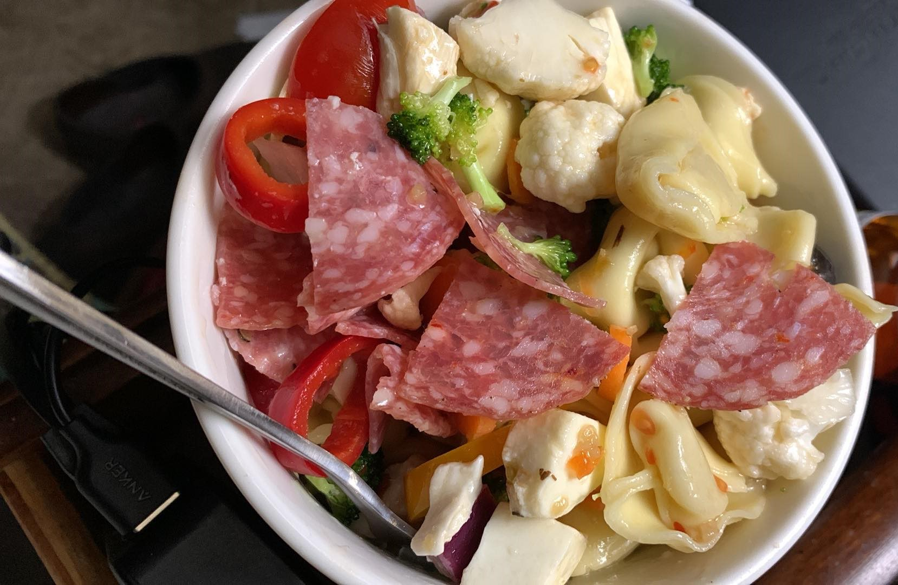

My Famous Salad
This salad is my family's favorite! I make about 3 gallons at a time and it is gone within a few days depending on how many people are in the house. The great thing about this salad is that you can swap out ingredients, add ingredients, and skip ones you don't like, to create something that your family will love. It also keeps well for several days and makes a perfect grab and go meal. Plus, it's actually healthy!
Ingredients:
- 2 C. Tortolini, your choice of flavor, boiled and cooled
- 1 C. Mini Ravioli your choice of flavor, boiled and cooled
- 16 Oz. Sweet Mini Tomatoes, halved
- 16 Oz. Marinated Fresh Mozzarrella Balls
- A handfull of Pepperoni or Salami Slices, cut into quarters and seperated.
- 1 Can of Black Olives
- ½ Jar of Green Olives
- 2 C. Sweet Mini Peppers, sliced
- 2 C. Mini Cucumbers, sliced
- 1 Red Onion, diced
- 1 Head Broccoli, cut into florettes
- 1 1/2 C. Cauliflower Florettes
- 2 Jars Marinated Artichoke Hearts, quartered
- 2 C. Carrots, sliced thinly on the diagonal
Once all of your chosen ingredients are combined in a large container, you will add 1-2 bottles of Italian Dressing. Allow this to marinade for a few hours in the fridge before serving.
